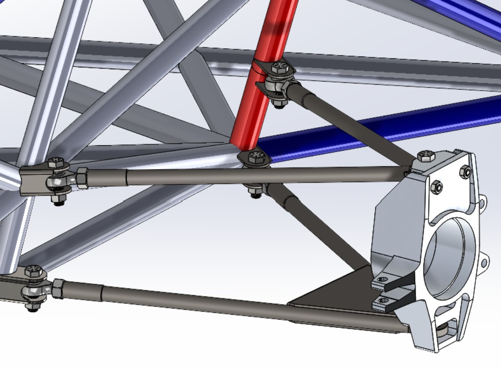
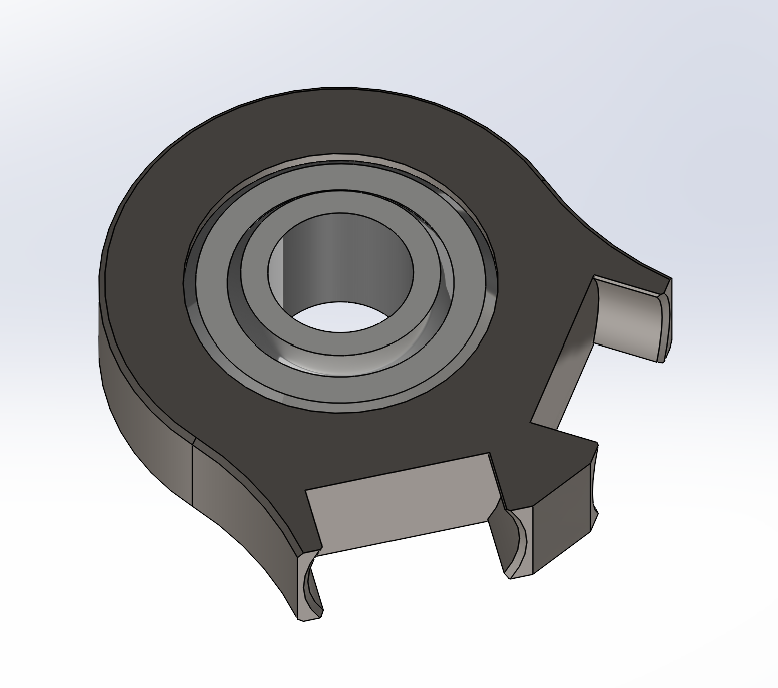
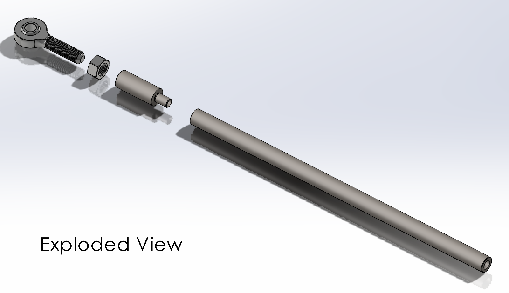
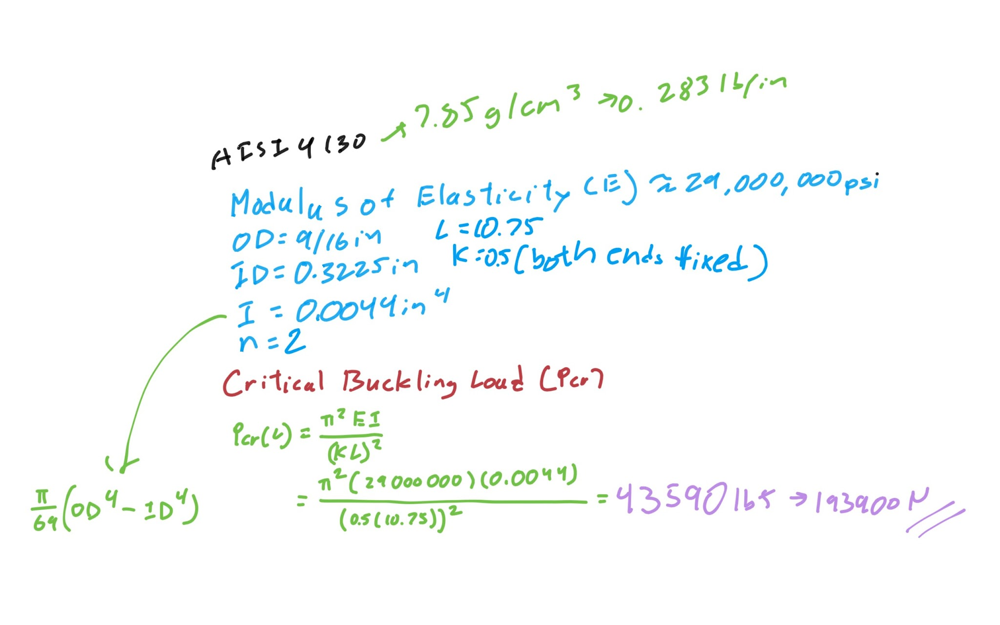
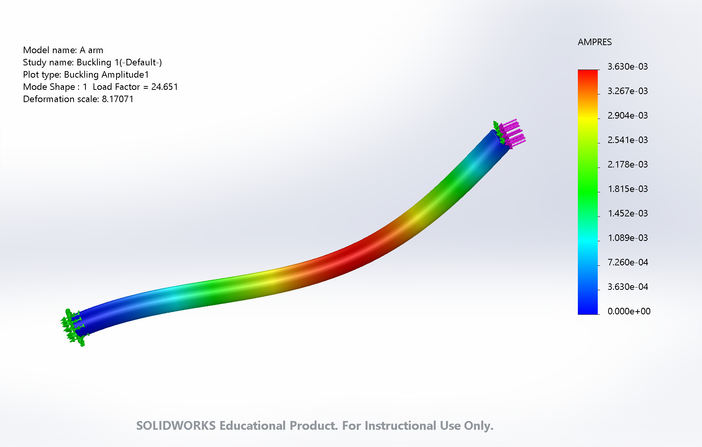
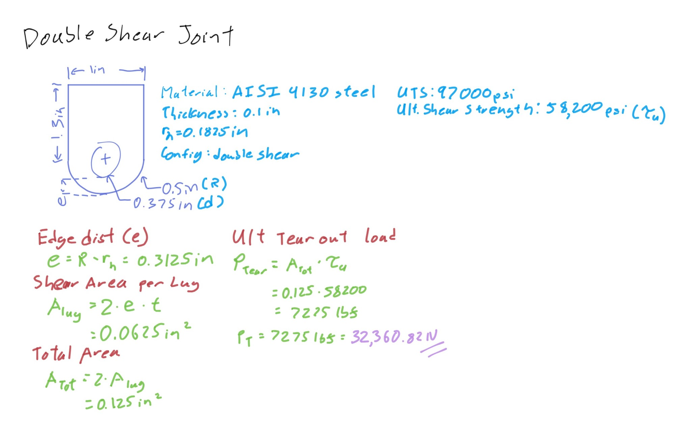
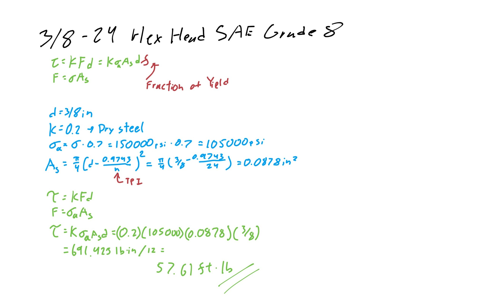
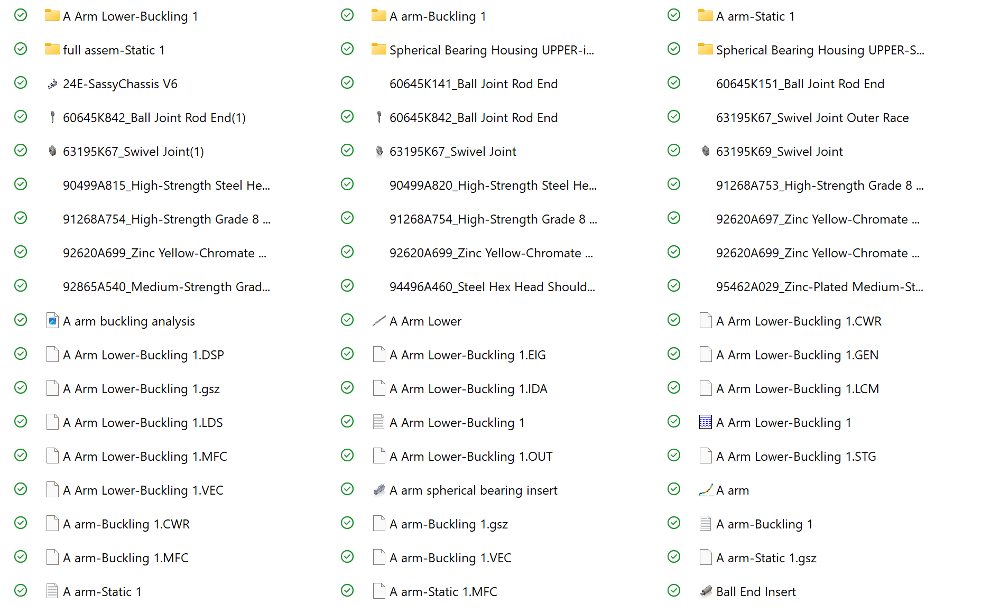

HR24E Control Arms Intern Project
Front-left suspension · Suspension Design Engineer · Sep 2026 – Oct 2026
I designed and modeled the upper and lower control arms for HR24E's front-left suspension in SolidWorks, working from the provided chassis, suspension sketch, and upright to set the assembly geometry and constraints.
The project covered the spherical bearing housing, the A-arm tube assemblies, and the chassis mounting brackets. I selected the hardware, checked the arms for buckling and the brackets for tear-out by hand, and compared the hand calculations with SolidWorks FEA. Throughout this project, I accounted for materials, manufacturing processes, and design constraints.
OPEN ANALYSIS SPREADSHEET ↗
The upright connects to the A-arms through a spherical bearing pressed into a 4130 housing. There are several ways to secure the bearing in its housing. Weight, hardware, and accessibility were the main factors in my choice.
Retaining ring
This method needs a groove cut inside the bore for a retaining ring. The housing would have to be taller, with extra material below to hold the bearing and above for the groove. Getting a tight fit for the ring would also be difficult, so the bearing could wobble in the housing.
Staking
Staking deforms the housing material into the bearing's chamfer to lock it in place. Because the housing usually isn't hardened, the tooling is cheaper and the process is simpler than swaging. The downside is that the softer housing has to be checked for creep more often.
Swaging
Swaging deforms the bearing's outer race into the housing's internal chamfer instead. Bearings are usually hardened, so a groove has to be cut into the bearing first so that only the intended material is pushed outward.
Final decision
I chose staking. It needs no extra hardware, so it is lighter than a retaining ring, and its process and tooling are cheaper than swaging.

Each A-arm leg has four parts: a 4130 tube, a 4130 adapter, a rod end, and a jam nut. The tube and adapter are turned from 4130 steel, pressed together, and welded. The nut threads onto the rod end, the rod end goes into the adapter and is adjusted to its final position with the nut, and the nut is then welded to the adapter.
Euler buckling
Euler buckling describes the sideways bending of a slender column under axial load. The tube is 10.75 in long, 4130 steel, with a 9/16 in outer diameter and a 0.12 in wall.
The effective-length factor K depends on how each end is held. Both ends are fixed here, so K = 0.5. The tube's area moment of inertia and the critical load are:
Here E is the modulus of elasticity. With a safety factor of 2, the maximum allowable axial force is about 96,582 N.
FEA comparison
I couldn't fix both ends in the SolidWorks buckling study, so the top end acted like a hinge (K = 0.7). With a 900 lb axial load, FEA gave a load factor of 24.651, for a critical load of 22,185.9 lb. My hand calculation for K = 0.7 gave 22,240.13 lb, a difference of about 0.2%.



Each mount is a simple bracket of 0.1 in 4130 sheet bent into a U shape, with a 0.375 in bore through both sides. The brackets are 1 in wide with a 0.5 in edge radius, and the bolt hole is concentric with that radius. The bolt passes through both lugs, so radial load is shared between them in a double-shear joint.
Tear-out analysis
Tear-out happens when a pin or bolt pulls through the end of a metal lug, shearing the material along two parallel planes toward the free edge. The edge distance, shear area, and ultimate tear-out load are:
This gives an ultimate tear-out load of 32,360.8 N, or 16,180.4 N with a safety factor of 2.
Why a 0.6 shear-to-tensile ratio?
This ratio is the fraction of a metal's tensile strength that it can carry in shear. If a steel bar takes 100 lb to pull apart and the ratio is 0.6, it takes only 60 lb to shear it in half. Handbooks such as MMPDS, MIL-HDBK-5, and Machinery's Handbook give empirical values between 0.58 and 0.62 for 4130 steel, so I used 0.6 to estimate the ultimate shear strength.
Torque specs
The brackets use six 1½ in ⅜-24 SAE Grade 8 hex head bolts. Torque values are in the analysis spreadsheet.


All plates and tubes are chromoly (AISI 4130).
| MATERIAL | TENSILE STRENGTH | YIELD STRENGTH |
|---|---|---|
| AISI 4130 steel | 560 MPa | 460 MPa |
| FASTENER GRADE | TENSILE STRENGTH | SHEAR STRENGTH |
|---|---|---|
| SAE Grade 8 | 150,000 psi | 90,000 psi |
| SAE Grade 5 | 120,000 psi | 72,000 psi |
Analysis
Although this project accounted for the tear out and buckling analysis, it failed to account for the strength in the welded joints.
- Next time I would check the welds for shear and bending as well as the thermal effects it would have on the material properties of the A-arms.
Organization & file naming
The project files made it hard to find hardware and other parts. Next time I would set up:
- A part numbering system
- Folders for each subsystem and a dedicated hardware folder
- Clearer assembly names and derivations
- Version history
CAD practices
- Find a better way to mate parts
- Redo my keybinds
- Show welds more clearly in the model
- Learn proper tolerancing and dimensioning
